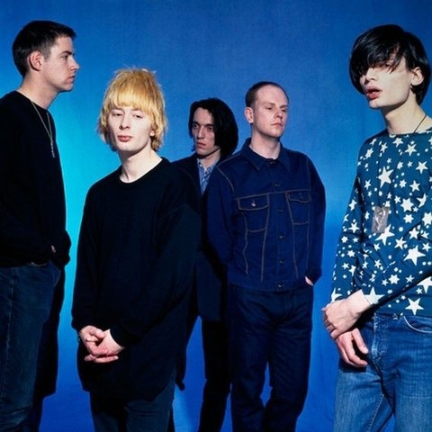
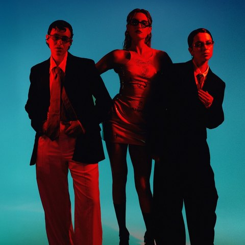

MY FESTIVALS
PREPARE
{{prep.headline}}
{{prep.sub}}
첫 페스티벌을 기다리는 중
탐색에서 마음에 드는 페스티벌을 고르면
여기서 준비를 시작할 수 있어요
여기서 준비를 시작할 수 있어요

장기하
윤하 십란
십란
수고했어요! 기억이 생생할 때
오늘 밤을 리포트로 남겨둘까요?
“{{rep.highlight}}”
{{rep.review}}
WRITTEN OCT 19, 2026